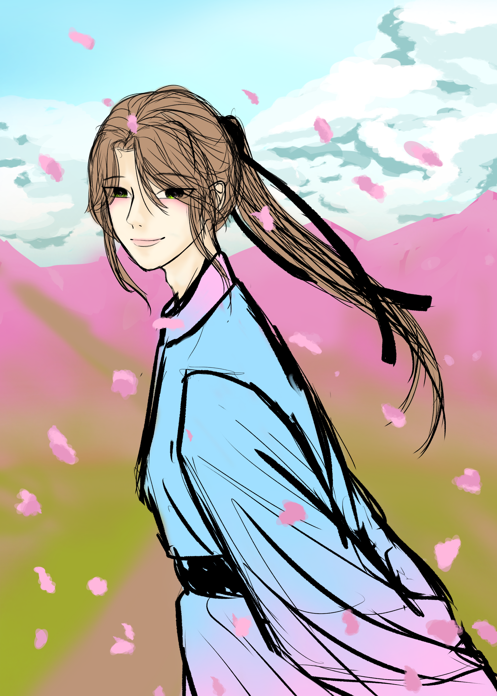

안녕하세요. 제주한라대학교 컴퓨터정보과에 재학 중인 김서연입니다.
프로그래밍과 웹 개발, 데이터 분석 분야를 공부하고 있으며 다양한 교육과 활동을 통해 경험을 쌓고 있습니다.
김서연제주한라대학교 컴퓨터정보과 주소 : 제주특별자치도 서귀포시 보목동 전화번호 : 010-3295-6462 |
안녕하세요. 제주한라대학교 컴퓨터정보과에 재학 중인 김서연입니다.
프로그래밍과 웹 개발, 데이터 분석 분야를 공부하고 있으며 다양한 교육과 활동을 통해 경험을 쌓고 있습니다.
프로그래밍 관련 교육 프로그램을 수료했습니다.
제조 데이터를 활용하여 데이터 분석 실습을 진행했습니다.
웹페이지 구조 작성, 표, 폼, 하이퍼링크, 시맨틱 태그 등을 학습하고 있습니다.
기초 프로그래밍과 데이터 분석을 학습했습니다.
Java 기초 프로그래밍을 학습하고 있습니다.
풍경이나 일상의 모습을 사진으로 촬영하는 것을 좋아합니다.

캐릭터 일러스트를 그리는 것을 좋아합니다.
